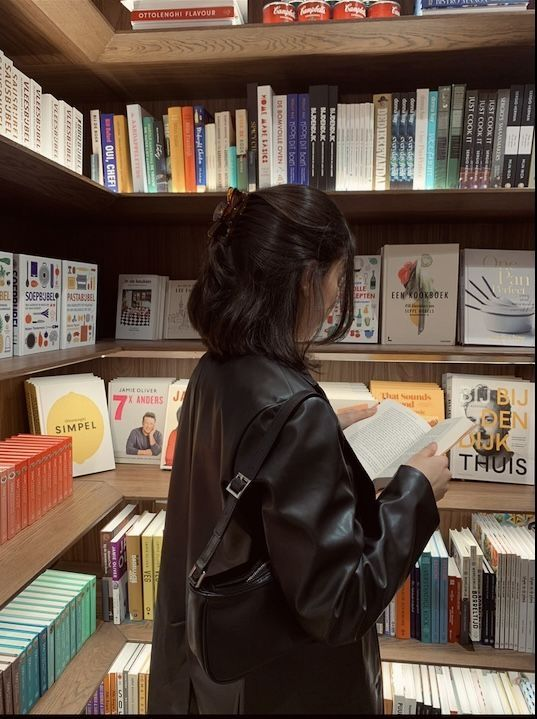

Reading
Reading is one of my favorite things to do when I have free time. I can expand my knowledge more when reading books and I really like the feeling of being immersed in knowledge.
I read many types of books but I like reading about brief history of humankind and some books about human behaviour.
